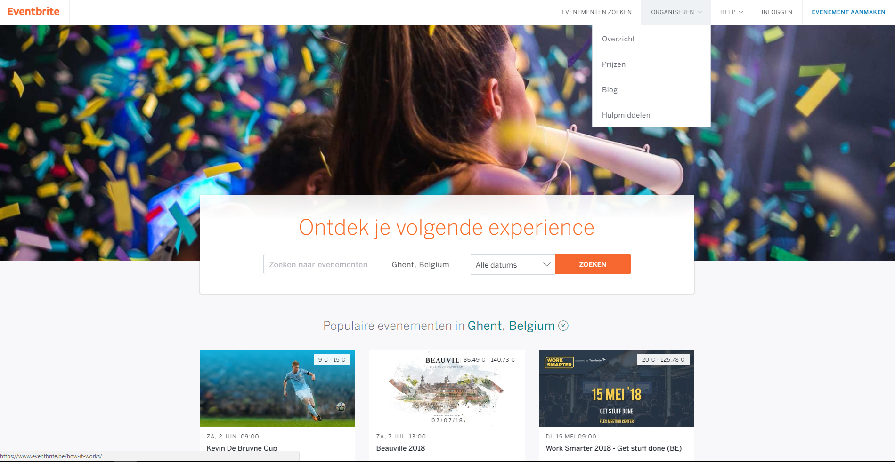

Concurrentie analyse
- Positief
- Bovenaan een zeer duidelijke navigatiebalk om snel de meest voorkomende functies terug te vinden. Wanneer je hovert over een bepaalde functie vind je die functie opgedeeld in nieuwe categorieën om het publiek vlotter. Er is ook een zoekfunctie aanwezig voor meer specifieke opties.
- Wanneer je iets opzoekt met de zoekfunctie vind je talloze resultaten, maar aan de zijkant kun je deze nog eens filteren volgens Talks, Blogs, Events enzovoort. Hierdoor wordt er dus zeer effectief gefilterd. Wanneer je dan kiest om een bepaalde filter te gebruiken, kun je nog altijd zeer gemakkelijk een andere kiezen moest je niet vinden wat je nodig hebt.
- Als je heel veel gedetailleerde informatie zoekt dan zal je dit zeker vinden op de site. Ze hebben bijvoorbeeld ook zeer uitgebreide FAQs over verschillende onderdelen van hun organisatie.
- De pagina’s over hun evenementen zelf zijn wat meer vereenvoudigd, ze geven een concrete introductie en alle praktische informatie omtrent het evenement. De prijzen staan ook al onmiddellijk op de eerste pagina over het evenement wat goed is want dan hoef je er niet naar te zoeken. Je kunt ook onmiddellijk zien als tickets uitverkocht zijn en je hebt de kans om je op een wachtlijst te plaatsen.
- Wanneer je een sponsor wenst te zijn voor een evenement, moet je eerst een zeer lange lijst van vragen doorlopen. TED heeft deze lijst van vragen opgedeeld in categorieën en brengt je telkens naar de volgende categorie wanneer je de vorige hebt ingevuld. Dit is een zeer goed systeem want zo krijg je een paar kortere lijsten en bovenaan zie je je vooruitgang.
- Het inschrijven voor een evenement en het aankopen van de high-definition live stream verloopt zeer vlot. De prijs is altijd zeer duidelijk aangeduid. De uitleg over de verschillende mogelijkheden is altijd zeer uitgebreid maar duidelijk.
- Negatief
- Over het algemeen is de website zeer druk. Er wordt enorm veel informatie gegeven aan het publiek maar het is een beetje overweldigend. Sommige algemene pagina’s zou men kunnen vereenvoudigen tot de kern en de details pas vrijgeven als men verder doorklikt. Anders raak je het snel beu om telkens zoveel te lezen. Het wordt snel te onoverzichtelijk aangezien er zoveel verschillende zaken op één pagina staan.
- Sommige zoekopdrachten die wat specifieker en vergezocht zijn leveren ongewenste resultaten op die niets meer te maken hebben met de te zoeken termen.
- Positief
- De animatie voor het ladingsscherm tussen de verschillende pagina’s is mooi en rustgevend. Hij past wel niet volledig bij de stijl van de rest van de site.
- Het is handig te zien waarin de acteurs allemaal gespeeld hebben als je naar hun onderdeel van de site surft. Een beetje extra informatie over hun persoonlijke leven zou wel leuk zijn ook.
- Negatief
- Er wordt niet uitgelegd wat het gezelschap voorstelt, waar de theaterstukken doorgaan, enzovoort. Kortom er is een beetje te weinig informatie aanwezig op de site. Pas bij het reserveren van het ticket kun je lezen waarover het theaterstuk gaat.
- Wanneer je tickets wilt reserveren kun je enkel tickets aanklikken met voorstellingen op data die al voorbij zijn. Je vindt nergens de volgende voorstellingen.
- Na het reserveren van een ticket kun je niet terug naar de homepagina. Zelfs met de link die leest ‘Terug’ kom je niet opnieuw terecht op de homepagina. Je moet zelf opnieuw de url intypen om naar de homepagina te gaan.
- Je vindt pas over wat de vorige voorstellingen gingen als je eerst de acteurs in de theaterstukken opzoekt.
- Positief
- De zoekfunctie op de site is zeer handig. Je kunt bijvoorbeeld met één klik al je filters verwijderen.
- De filter ‘Waar’ in de zoekfunctie specifieert telkens verder.Bijvoorbeeld: Provincie Limburg > Regio Maaseik-Lommel > Hamont-Achel > 3930 Hamont.
- Je kunt ook je zoekopdrachtfilters opslaan als je ingelogd bent. Dit is handig als je bijvoorbeeld altijd dezelfde soort evenementen zoekt op dezelfde plaats. Je kunt er zelfs voor zorgen dat je een email krijgt wanneer er nieuwe resultaten voor je opgeslagen zoekopdracht.
- Negatief
- Een zeer vervelend puntje aan de zoekfunctie is dat er bij de resultaten op de eerste pagina nergens een prijs van het evenement staat. Je kunt dus niet zien bij je zoekresultaten hoeveel het evenement kost, er kan niet gefilterd worden op prijs of er kan niet geordend worden volgens prijs.
- Bij sommige evenementen staat er enorm weinig tot zelfs geen informatie in de beschrijving. Er zal waarschijnlijk niet snel 75 euro betaald worden voor een evenement waarbij er 2 kleine zinnetjes uitleg staan.
- In het algemeen ziet de site er niet leuk uit. Het heeft een ‘saai’ gevoel. Er worden geen al te mooie foto’s of kleuren gebruikt.

- Positief
- Op de homepage vind je direct een zoekfunctie naar evenementen die zich op de site bevinden. Je hoeft er dus niet te lang naar zoeken
- Op de homepage vind je ook onmiddellijk een reeks populaire evenementen in de buurt. Alle evenementen krijgen korte algemene informatie zoals de naam, de datum, de plaats en de prijs. Dit is heel handig als je gewoon zoekt naar wat er allemaal te doen is in de buurt. Je vindt er ook populaire categorieën waarin verschillende soorten evenementen ingedeeld worden. Hierdoor kun je de zoektocht naar een bepaald evenement gemakkelijk inkorten.
- Op de pagina van een evenement blijft de naam, de datum, de plaats, de prijs en de link naar de tickets altijd bovenaan staan (fixed). Dit kan zeer handig zijn bij een lange beschrijving van het evenement. Zo hoef je niet telkens opnieuw naar boven te scrollen.
- Bij de zoekfunctie kun je gebruik maken van filters. Deze filters worden zelf ook gefilterd. Bijvoorbeeld: wanneer je aan het zoeken bent naar een gratis evenement en er is enkel een gratis evenement volgende week, dan zullen alle andere filteropties verdwijnen.
- Negatief
- De algemene footer op de site is te groot en er staan te veel opties tussen die ook zeer gemakkelijk bereikbaar zijn zonder de footer. Deze opties zouden kunnen weggehaald worden zodat de footer kleiner wordt.
- Bij een zoekopdracht naar evenementen kun je een zoekterm invullen en dan daarna verschillende filters erop toepassen. Wanneer je een nieuwe zoekterm neemt verdwijnen je filters. Als je dus enkel een evenement zoekt voor volgende week moet je na elke nieuwe zoekterm telkens ‘Volgende week’ aanduiden.
- De navigatiebar verandert afhankelijk van in welk onderdeel van de site je zit. Je kunt altijd gemakkelijk terug naar de homepage maar zo zie je telkens enkel de opties die je nodig hebt. Dit vereenvoudigt alles goed maar kan zeer verwarrend zijn. Wanneer je je al een tijdje op de site begeeft en constant tussen pagina’s loopt, dan wordt het zeer vervelend om telkens opnieuw naar een optie te zoeken die constant van plaats verandert of een optie die maar op enkele pagina’s staat. Bijvoorbeeld: wanneer je via ‘Organiseren’ naar het ‘Overzicht’ gaat, vind je onder ‘Hulpmiddelen’ een blog. Maar wanneer je via ‘Organisatorsprofiel’ of ‘Evenementen beheren’ zoekt naar deze blog kun je hem niet vinden onder ‘Hulpmiddelen’.
- Bij het aanmaken van een profiel moet je een wachtwoord verzinnen en opgeven maar er wordt niet gevraagd om het wachtwoord te herhalen. Als je dus snel een foutje typt in je wachtwoord heb je wat probleempjes met inloggen de volgende keer. Je kan natuurlijk gemakkelijk je wachtwoord opnieuw instellen maar dit kon allemaal vermeden worden als er gewoon een klein extra ‘herhaal’-testje was voor het wachtwoord.